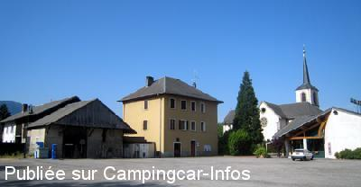
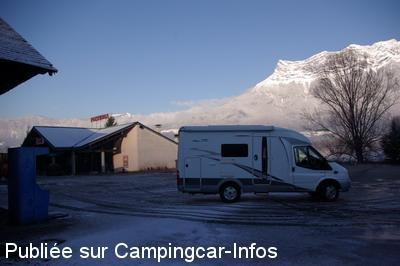

ASN = Aire de services avec stationnement nuit possible de :
BOURGNEUF
(N° 377)
Accès/adresse :
Accès D925
Place des Commerces
73390 BOURGNEUF
Place des Commerces
73390 BOURGNEUF
Latitude : (Nord) 45.55216° Décimaux ou 45° 33′ 7′′
Longitude : (Est) 6.21045° Décimaux ou 6° 12′ 37′′
Tarif : 2012
Stationnement : gratuit
20 minutes d'eau : 2 €
Type de borne : FLOT BLEU
Services :


Pizzeria et commerces à proximité
Autres informations :
Ouverte toute l'année

Le 26/05/2009 par Bernard.Tartois

Le 13/01/2008 par Xtian74
de
Philippe
le 19/08/2015 :
Parking grand et goudronné en grande partie.
Borne un peu serrée, mais bon on y arrive quand même.
Sinon, juste une info, si vous désirez une pizza, il faut prévoir 2 heures de délai..... et oui, deux heures !!! je n'avais jamais vu çà...
Donc pour 20 heures commander vers 18h00 sinon, privés de pizzas.
Et encore un détail, fait curieux la TNT ne passe pas alors que l'on est dans une zone plutôt à habitation dense. Mais vérifié auprès de plusieurs voisins, seuls les paraboles vous permettront de suivre vos émissions préférées, à moins que comme nous vous n'ayez des DVD à regarder.
Parking grand et goudronné en grande partie.
Borne un peu serrée, mais bon on y arrive quand même.
Sinon, juste une info, si vous désirez une pizza, il faut prévoir 2 heures de délai..... et oui, deux heures !!! je n'avais jamais vu çà...
Donc pour 20 heures commander vers 18h00 sinon, privés de pizzas.
Et encore un détail, fait curieux la TNT ne passe pas alors que l'on est dans une zone plutôt à habitation dense. Mais vérifié auprès de plusieurs voisins, seuls les paraboles vous permettront de suivre vos émissions préférées, à moins que comme nous vous n'ayez des DVD à regarder.
de
Jacques
le 23/10/2014 :
De passage le 16/10/2014. Aire très pratique avec stationnement gratuit au centre du village. Pizzeria avec cuisine de très bonne qualité et accueil super sympa. Etape à recommander.
De passage le 16/10/2014. Aire très pratique avec stationnement gratuit au centre du village. Pizzeria avec cuisine de très bonne qualité et accueil super sympa. Etape à recommander.
de
Papé Jack
le 26/09/2014 :
le 18/09/2014 De passage sur cet aire,sans intérêt,au milieu des voitures et camion,avec un accès aux services bloqué par les véhicules.
le 18/09/2014 De passage sur cet aire,sans intérêt,au milieu des voitures et camion,avec un accès aux services bloqué par les véhicules.
de
Manu
le 19/08/2013 :
De passage à l'aller et au retour de Croatie, aire super calme, grande avec pizza et boulangerie juste à côté. Nous avons reculé devant les prix de la pizzeria. Borne à mon gout pratique pour vidanger. Je la recommande pour ceux qui veulent passer une bonne nuit avant d'emprunter le tunnel de Fréjus.
De passage à l'aller et au retour de Croatie, aire super calme, grande avec pizza et boulangerie juste à côté. Nous avons reculé devant les prix de la pizzeria. Borne à mon gout pratique pour vidanger. Je la recommande pour ceux qui veulent passer une bonne nuit avant d'emprunter le tunnel de Fréjus.
de
BC 74
le 08/08/2011 :
De passage le 29/07/11, aire calme et platte. On peut souper au resto qui est juste à coté de l'aire et qui est très bien.
A recommander.
De passage le 29/07/11, aire calme et platte. On peut souper au resto qui est juste à coté de l'aire et qui est très bien.
A recommander.
de
poncet michele
le 16/11/2010 :
N'hésitez pas à déguster sur place un agréable repas ou pizza sur place "Aux Quatre Saisons", site Facebook "les quatre saisons".
N'hésitez pas à déguster sur place un agréable repas ou pizza sur place "Aux Quatre Saisons", site Facebook "les quatre saisons".
de
Bobjackie
le 07/09/2010 :
Il y a des WC à la turque (propres) et un robinet d'eau. La pizzeria est fermée le lundi et le mardi.
Il y a des WC à la turque (propres) et un robinet d'eau. La pizzeria est fermée le lundi et le mardi.
de
roulotte
le 01/12/2009 :
Borne pratique sauf pour la vidange des eaux grises. Deux pièces d'un euro pour 20 min d'eau/électricité. Boulangerie et pizzeria juste à coté.
Borne pratique sauf pour la vidange des eaux grises. Deux pièces d'un euro pour 20 min d'eau/électricité. Boulangerie et pizzeria juste à coté.
de
Bernard TARTOIS
le 26/05/2009 :
Effectivement, c'est une étape très calme et agréable. La borne a été remplacée par une neuve qui fonctionnait parfaitement lors de notre passage: pour 2€, 20 minutes d'eau §
Effectivement, c'est une étape très calme et agréable. La borne a été remplacée par une neuve qui fonctionnait parfaitement lors de notre passage: pour 2€, 20 minutes d'eau §
de
Dufeu
le 11/06/2008 :
Nous y avons passé la nuit. Très calme, très agréable. Pain et croissants de bonne qualité. Borne toujours défectueuse.
Nous y avons passé la nuit. Très calme, très agréable. Pain et croissants de bonne qualité. Borne toujours défectueuse.
de
Xtian 74
le 13/01/2008 :
Passage ce jour. A l'entrée de la petite place, une pizzeria pourra fournir votre diner - et vous passez obligatoirement devant.
La borne est du type Flot Bleu, en principe elle est mise hors service en hiver. Je n'ai pas vérifié si elle fonctionnait à cette époque de l'année.
Passage ce jour. A l'entrée de la petite place, une pizzeria pourra fournir votre diner - et vous passez obligatoirement devant.
La borne est du type Flot Bleu, en principe elle est mise hors service en hiver. Je n'ai pas vérifié si elle fonctionnait à cette époque de l'année.
de
Franky
le 02/10/2006 :
Stellplatz ist groß und verhältnismäßig ruhig. Bäcker und eine Pizzeria in direkter Nähe. Entsorgungsstation war leider defekt bzw. nicht bedienbar.
Stellplatz ist groß und verhältnismäßig ruhig. Bäcker und eine Pizzeria in direkter Nähe. Entsorgungsstation war leider defekt bzw. nicht bedienbar.